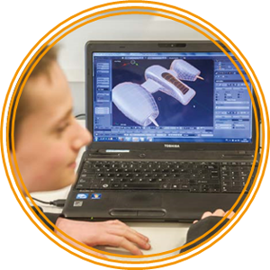

Summative assessment
The levels from the previous ICT curriculum have been removed, leaving assessment at KS3 to the responsibility of individual schools.
By the end of each key stage, pupils are expected to know, apply and understand the matters, skills and processes specified in the relevant programme of study.
The programme of study should form the basis of any assessment scheme. An obvious solution is to gather evidence from individual pupils as to whether they have met the requirements through a portfolio or record of achievement. This doesn’t need to be too onerous a task. For example, as a pupil demonstrates mastery of a particular point, the evidence could be collected on a blog and their progress recorded by the teacher in the school assessment system.
There are a number of frameworks available for assessing computing. One such is the Progression Pathways Assessment Framework (KS1 to KS3) published by Computing at School. This framework provides guidance on what to look for at different stages in the development of knowledge under a range of subject headings. An alternative framework is Assessing Attainment in Computing which takes a slightly different approach. It is up to you whether to adopt a published framework or to devise one of your own.
It makes sense to split the programme of study into individual clauses that can be easily understood by teachers, pupils and parents or carers, and against which progress can be tracked. To demonstrate progress, pupils could take a ‘snapshot’ showing the parts of the programme of study that have been met, along with the evidence. This could be compared with another ‘snapshot’ from a later date.

Here is an example of how this might work in practice.
Understand how ... text ... can be represented ... digitally, in the form of binary digits
Skills - convert from Unicode to text; convert from text to Unicode; be able to predict the Unicode value of a character given another character close to it in the alphabet.
Knowledge - know the need for coding systems; know why Unicode is used; know there are different types of Unicode; know how binary is used to represent a capital letter in the English alphabet.
Behaviours - ability to work in pairs to create Unicode messages; peer assessment of work.
Evidence - three messages decoded from Unicode into text; one message written in Unicode; completed worksheet on Unicode.
The example above is matched to a clause from Assessing Attainment in Computing. This assessment framework is derived directly from the programme of study, organised as eight bands across KS1-KS3 for CS, IT and DL. It builds on Computing at School's primary national curriculum guidance.
A similar approach can be followed if using the Progression Pathways Assessment Framework (KS1 to KS3) published by Computing at School. On the right-hand side of the web page, there is a PDF document available for download that explains how the assessment framework can be used with digital badges. An alternative version shows progression under the CS, IT and DL strands.